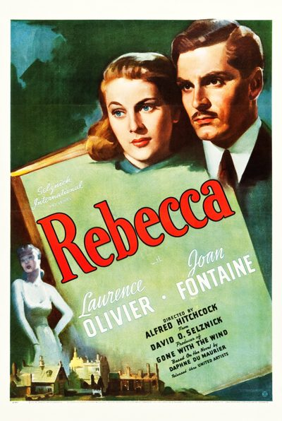

Rebecca
Starring: Laurence Olivier, Joan Fontaine, Judith Anderson
Director: Alfred Hitchcock
Writer: Michael Hogan, Robert E. Sherwood, Joan Harrison
Producer: David O. Selznick
Studio: Selznick International Pictures
Rebecca is a 1940 American romantic psychological thriller film directed by Alfred Hitchcock. It was Hitchcock's first American project, and his first film under contract with producer David O. Selznick. The screenplay by Robert E. Sherwood and Joan Harrison, and adaptation by Philip MacDonald and Michael Hogan, were based on the 1938 novel of the same name by Daphne du Maurier.
Trivia
- Won the Academy Award for Best Picture.
- Won the Academy Award for Best Cinematography, Black-and-White.
- Selected for the National Board of Review: Top Ten Films.
- Also nominated for: Academy Award for Best Supporting Actress; Academy Award for Best Actor; Academy Award for Best Actress; Academy Award for Best Director; and 5 more.
- Based on Rebecca (novel by Daphne du Maurier).
- In 1938, Hitchcock read the galley proofs of Rebecca whilst filming Jamaica Inn, an adaptation of another Daphne du Maurier novel.
- Hitchcock considered independently purchasing the film rights, but was unable to match the high amounts offered by major studios.
- The high projected sales figures for the novel made Rebecca a highly desirable property, and the rights ultimately went to Selznick International for $50,000 - the same price Selznick had paid for Margaret Mitchell's Gone with the Wind.
Filming Locations
- Principal photography on Rebecca began on 8 September 1939, having been postponed twice from 30 August and then 5 September.
Previous Showings
23 Runs • 16 Festivals
Original Billings: 1 run (May 26, 1940)
Original Run: May 26, 1940 (Sunday - Wednesday)
All runs on record (23):
- May 26, 1940 (Sunday - Wednesday)Laurence Olivier, Joan Fontaine
- December 8 - 12, 1990w/ Foreign Correspondent
- February 29 - March 4, 1992w/ Foreign Correspondent
- November 28 - December 1, 1992w/ Portrait of Jennie
- April 29 - 30, 1993w/ How Green Was My Valley
- May 17 - 18, 1995w/ Suspicion
- September 12 - 13, 1996w/ Foreign Correspondent
- July 31 - August 3, 1999summer99w/ Foreign Correspondent
- February 24 - 27, 2000Hitchcock 2000w/ Suspicion
- September 29 - October 5, 2001summer2k1w/ Pride and Prejudice
- July 31 - August 3, 2004Summer 2004w/ Letter from an Unknown Woman
- August 5 - 7, 2006Summer 2006w/ Strangers on a Train
- February 8 - 11, 2008HITCHCOCK: Ten Weeks of the films of the Master of Suspensew/ Suspicion
- September 11 - 14, 2009HITCHCOCKw/ Shadow of a Doubt
- September 10 - 16, 2011Summer 2011w/ Suspicion
- February 21 - 24, 2013Hitchcock 2013w/ Suspicion
- January 2 - 5, 2014Remembering Joan Fontaine January 2014w/ Suspicion
- March 24 - 27, 2016Hitchcock 2016w/ Suspicion
- April 13 - 15, 2018Hitchcock and Other Masters of Suspense plus, Frankenstein at 200w/ Sabotage
- March 22 - 24, 2019Hitchcock, Master of Suspensew/ Suspicion
- April 27 - 28, 2024Hitchcock, The Master of Suspensew/ Suspicion
- June 14 - 15, 2025Hitchcock, The Master of Suspensew/ Suspicion
- April 25 - 26, 2026Hitchcock, The Master of Suspensew/ The Lady Vanishes